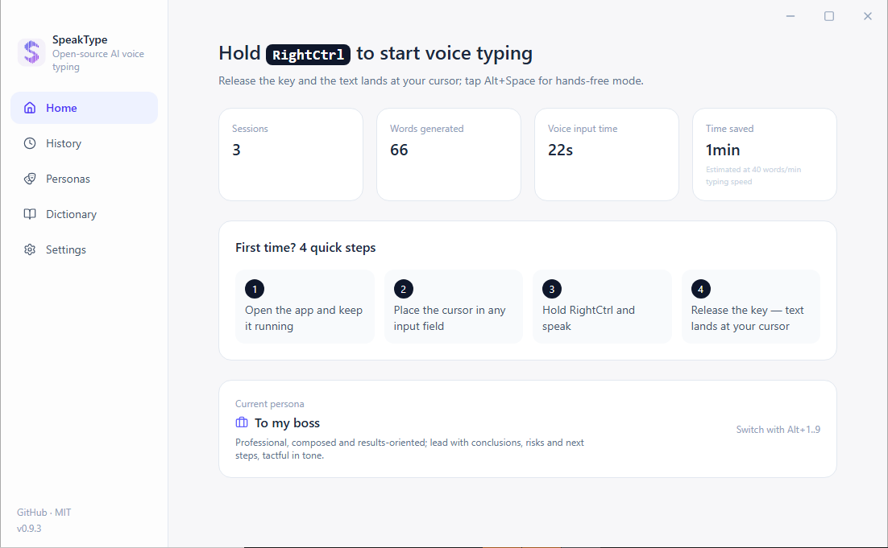
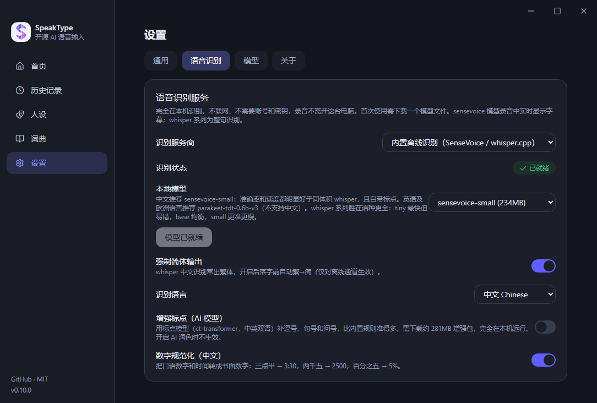

Hold RightCtrl, talk, release — your words land at the cursor in any app. Recognition engine, AI polishing and hotword correction are all yours to configure. Runs fully offline if you want it to.
Windows 10/11 x64 · MIT licensed · macOS in progress · release notes & older builds

Why SpeakType
Most AI dictation apps are closed source and route your voice through the vendor's servers. SpeakType has no servers at all — audio goes only where you tell it to go, or nowhere at all.
Protocols, correction algorithms, UI — every line is readable, hackable and self-hostable. No telemetry, no account.
SpeakType runs no cloud service. Your audio goes only to the recognition service you chose and configured — or stays entirely on your machine.
Recognition engine, polishing model, hotword dictionary, personas, hotkeys — swap any piece, including a local Ollama.
Fix a wrong word by hand after it lands, and SpeakType notices the edit and learns it into your dictionary. The same mistake won't happen twice.
Desktop with no mic? Scan a QR code and talk into your phone — LAN direct, or through a relay you can self-host. No one else ships this.
English, 简体中文, 繁體中文, 日本語, 한국어 — follows your system or switch instantly. More welcome via PR.
Sixty seconds
Run the installer, or unzip the portable build — it keeps its config next to the .exe.
Settings → Recognition → built-in offline model (one-click download), or paste your own API key.
Put the cursor anywhere, hold RightCtrl (or a mouse side button), speak, release.
Fix a word by hand and it goes into your dictionary automatically — accuracy compounds.
Recognition
Bring your own key, bring your own account, or bring nothing at all.
One-click download inside the app: SenseVoice-Small for Chinese (about 0.27s per utterance with punctuation), NVIDIA Parakeet TDT 0.6B v3 for top English + 25 European language accuracy, or whisper.cpp (tiny/base/small). No network, no account, no key.
Base URL + key + model name, with a connection test. Presets for OpenAI Whisper, Groq (generous free tier), Fireworks, Mistral Voxtral, SiliconFlow and Alibaba Bailian.
Sign in to ChatGPT once inside the app and dictate through your own session — a free account works. Doubao voice works the same way. Undocumented endpoints, off by default; read the disclaimer first.
Point AI polishing at any OpenAI-compatible chat endpoint — OpenAI, Gemini's compatible endpoint, Groq, DeepSeek, Zhipu GLM-4-Flash, Kimi, Qwen, or a local Ollama / LM Studio endpoint (API key optional for local endpoints). Leave it empty and a local cleanup pass still fixes filler and self-corrections ("5pm — no, 6pm" → "6pm").
Add names and product terms; homophone and near-homophone errors are repaired locally through pinyin matching, before any model sees them.

Nobody else has this
Desktop tower with no mic, or a laptop mic that picks up the fan? Scan the QR code on your screen, hold the button on your phone and talk — the text lands at your desktop cursor. Same Wi-Fi goes LAN-direct; anywhere else goes through a relay you can deploy to your own Cloudflare account in one command. An Android APK and an installable PWA are both available.
Honest comparison
Great tools exist in this space. Here is where SpeakType is genuinely different — and where it isn't there yet.
| SpeakType | Closed-source SaaS dictation | Offline-only open source | |
|---|---|---|---|
| Source available | MIT, all of it | No | Usually yes |
| Price | Free | ≈ $10–15 / month | Free |
| Works fully offline | Yes | No | Yes |
| Cloud models when you want them | Any OpenAI-compatible API | Vendor's own | Rarely |
| Phone as microphone | Yes, QR-code pairing | No | No |
| Learns from the words you fix | Automatic | Rarely | No |
| Chinese homophone repair | Built in | Varies | Varies |
| macOS / Linux | In progress | Usually yes | Often yes |
Download
Unsigned installer — if SmartScreen objects, choose “More info → Run anyway”.
Windows 10/11 x64 · ~98MB · start menu shortcut, optional autostart.
⬇ SpeakType-Setup-0.12.0.exeTurns your phone into the mic for the desktop app. Or just add the web page to your home screen.
⬇ SpeakType-0.12.0.apkThe platform layer is merged; the DMG is waiting on a macOS build machine. Watch the repo for it.
Follow on GitHubFAQ
Only to the service you configured yourself. With a built-in offline model, nothing leaves your machine — SpeakType operates no servers and collects no telemetry. Keys, history and failed clips live in %APPDATA%\SpeakType.
No. The default path is a built-in offline model you download once inside the app. Keys are optional, for people who want cloud accuracy or speed.
Any Windows app with a text cursor — browsers, editors, IDEs, chat clients, Office. Text is inserted the same way a paste would be.
Yes. Settings → General → “record a key” and press anything, including mouse side buttons. Hands-free mode (Alt+Q) stops on silence for long dictation.
After the text lands, SpeakType watches that one input field via Windows UI Automation. If you fix a word, it diffs the change locally, learns the corrected word into your dictionary and updates the history entry. Switch windows and it stops watching. The comparison never leaves your machine, and you can turn the whole thing off.
It reuses a session you sign into yourself and calls endpoints those vendors do not document, so it may break or conflict with their terms — the account risk is yours. It ships off by default. Prefer the offline engine or your own API key if you'd rather not take it. Full disclaimer.
Run the uninstaller from Start menu or Settings → Apps. It removes the program but keeps your settings, dictionary and downloaded models (including the ~660MB offline model) in %APPDATA%\SpeakType so a reinstall picks up where you left off. To wipe everything, delete that folder after uninstalling.
The platform abstraction is merged and a DMG target is configured; the build needs a macOS machine. Contributions welcome.
Free, open source, and it never phones home.